Antipasti toscani
- Crostini & bruschettetoscani, come una volta
- Carpaccio & affettaticon scaglie e rucola
Brera · Via Fiori Chiari · dal 1959
trattoria toscana · la cucina di campagna
Dal 1959, un pezzo di Toscana nel cuore di Brera. La bistecca alla fiorentina, le tagliatelle tirate a mano, la zuppa di farro e i crostini — in una trattoria storica rimasta com'era, tra le sue cinque vetrine e le sedie di sempre.
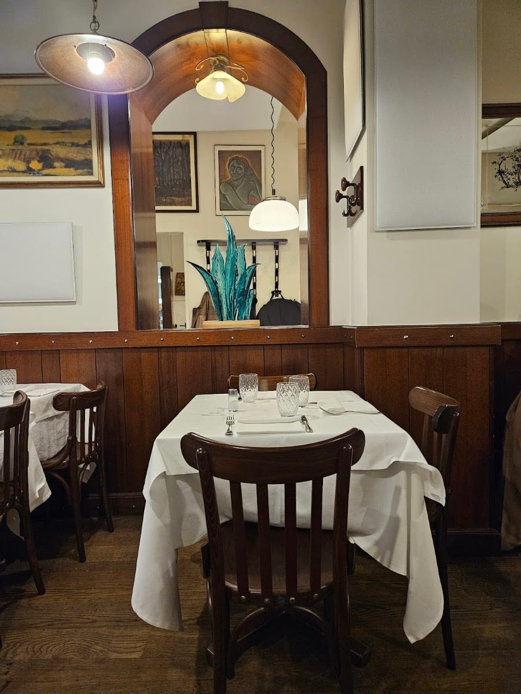
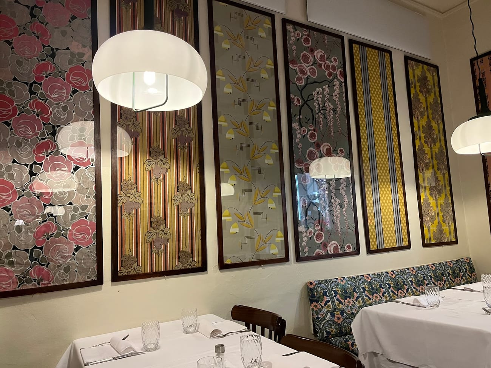
Dal 1959
La Torre di Pisa apre in Via Fiori Chiari nel 1959, per mano della famiglia toscana Meacci. Negli anni diventa un ritrovo di pittori, giornalisti e intellettuali di Brera — da Camilla Cederna a Giancarlo Baghetti.
Oggi la porta avanti Alberto Cortesi, toscano DOC, con la stessa filosofia: piatti semplici e genuini, pasta fresca, carni scelte e il miglior olio extravergine di Toscana.
Fedele alle origini
Le cinque vetrine su Via Fiori Chiari non sono mai state cambiate. Le sedie in legno sono quelle di sempre. La sala degli arazzi, la saletta intima da due tavoli, le stanze separate: tutto è rimasto com'era. Perché certe cose, a Brera, non si toccano.
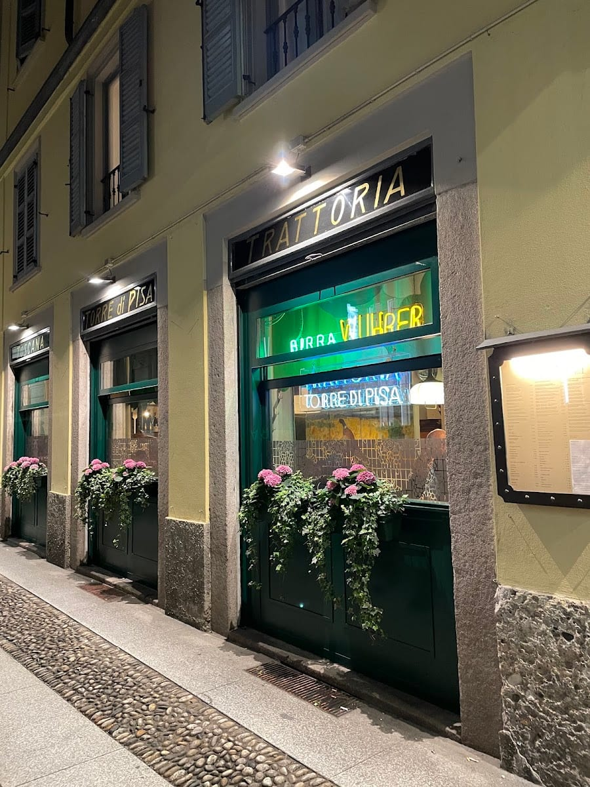
A tavola
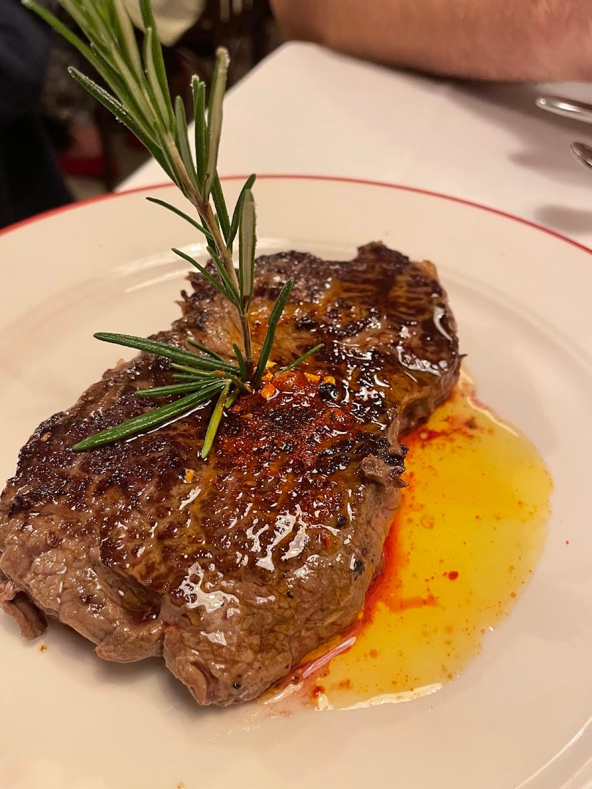
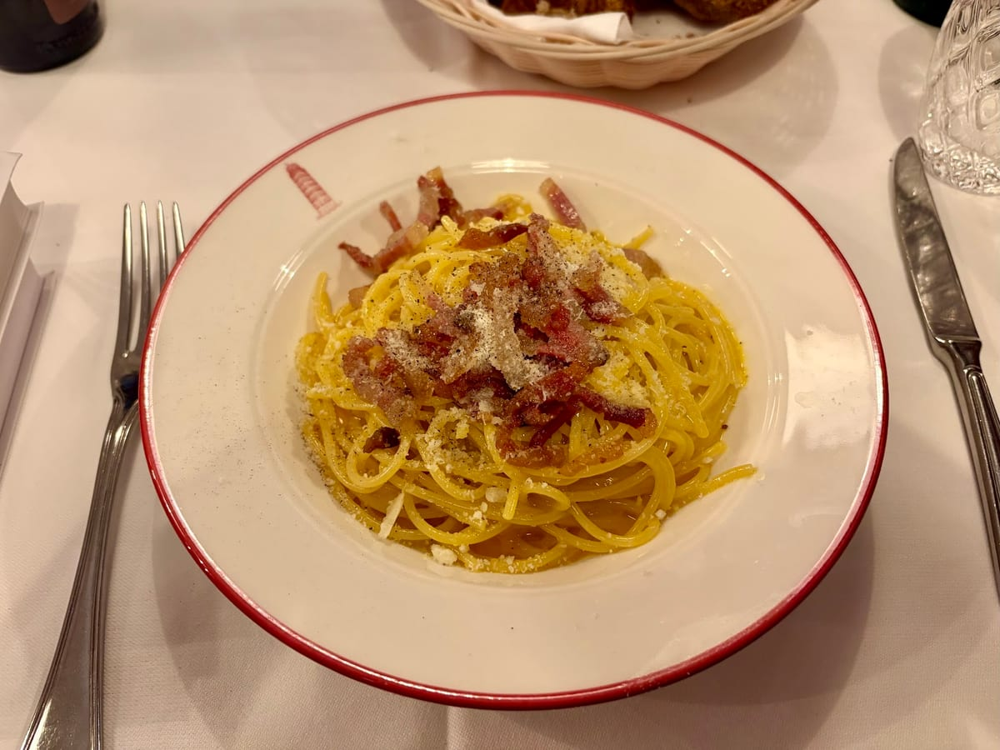
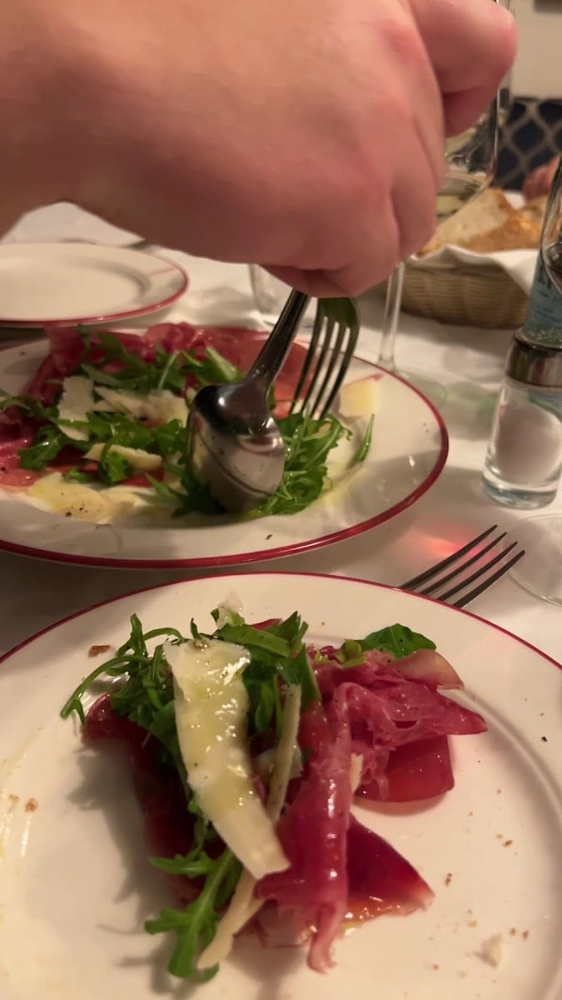
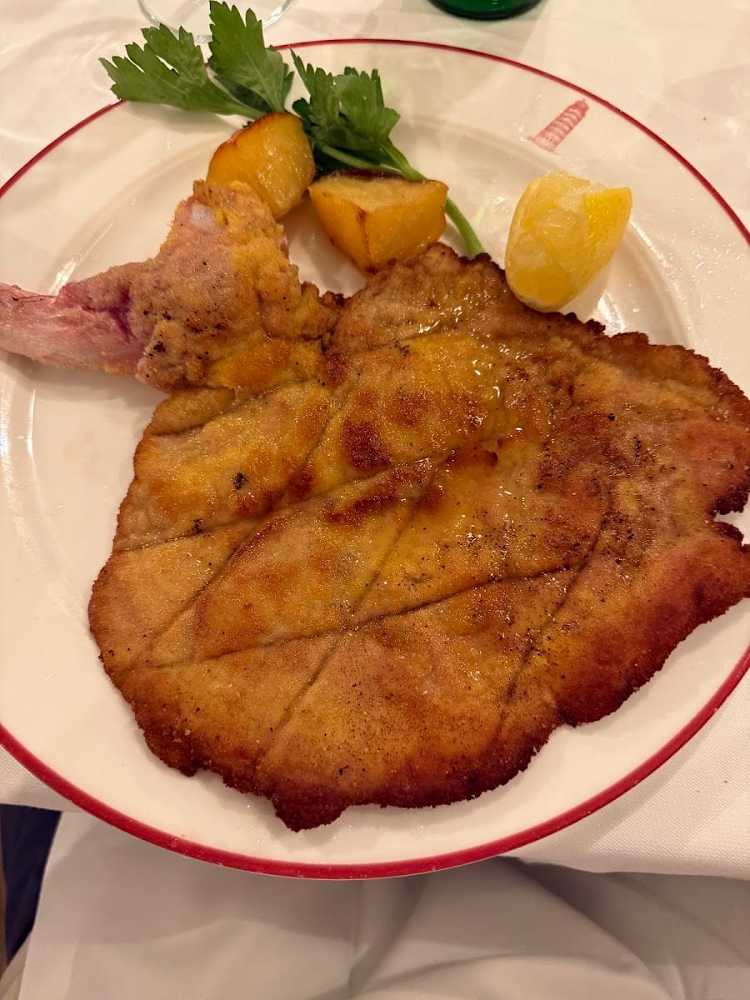
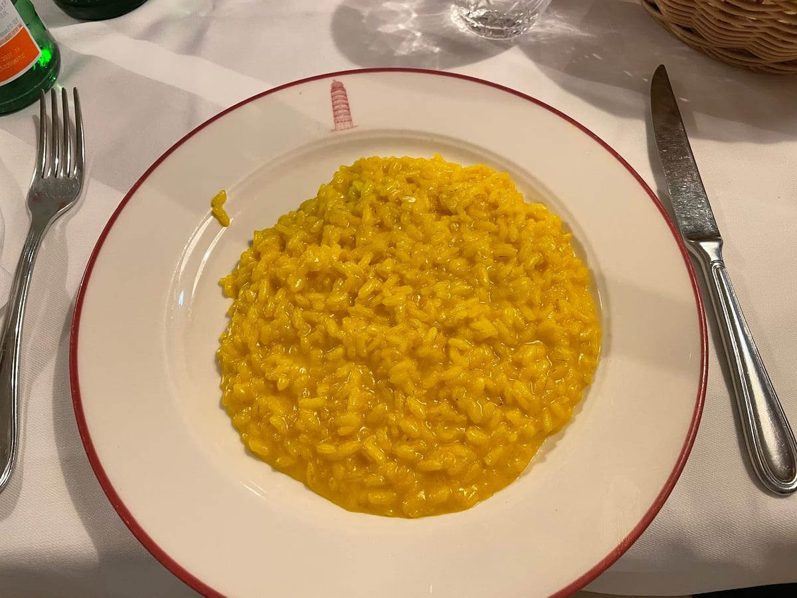
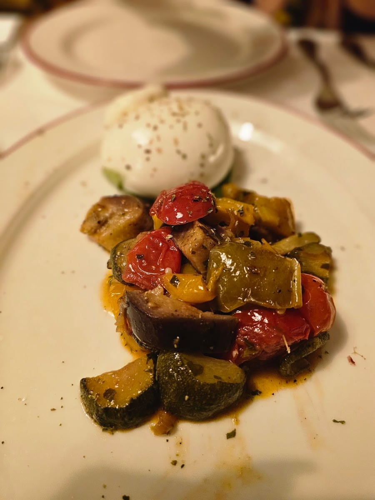
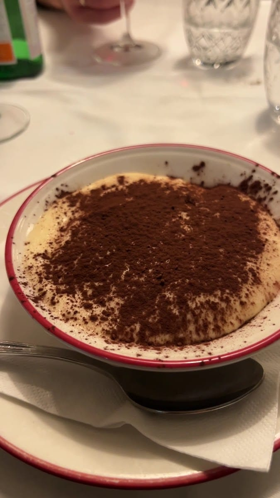
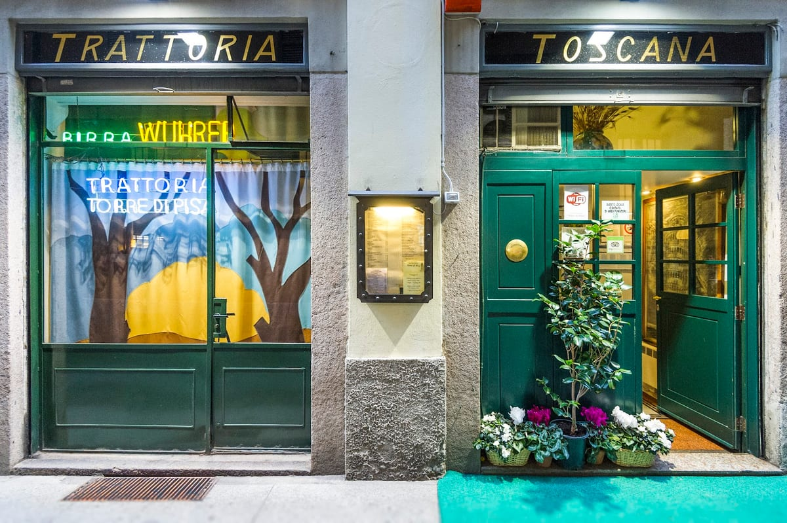
Le voci
Trattoria dove ritrovare i grandi classici della cucina italiana nel centro di Brera. Piatti della tradizione eseguiti con cura, sapori netti e materie prime di qualità.
Antonio · ★★★★★
Best meal we had in Milan! Very authentic and local. The food was a 10/10 — order off the menu of the day, they have the freshest dishes there.
Anna Sheridan · ★★★★★
Amazing food and wine selection, everything made to perfection. A regular for us: the flavours truly hit the spot, and the ambience is amazing.
Pranita George · ★★★★★
A lovely, no-nonsense spot for classic Italian comfort food. The pasta feels genuinely homemade, and the sauces are well balanced.
Patchranun Natty · ★★★★★
I dolci eccezionali, come la serata passata alla trattoria. Un pezzo di vecchia Brera che resiste.
Recensione Google · ★★★★★
Dove siamo
La mappa è di Google: aprendola, Google riceve il tuo indirizzo IP e può usare i suoi cookie.
FAQ
In Via Fiori Chiari 21, nel cuore di Brera a Milano. La trattoria è aperta dal 1959.
Cucina toscana di campagna: crostini, tagliatelle fresche, zuppa di farro, bistecca alla fiorentina e tagliata, con olio extravergine toscano. E i grandi classici della cucina italiana.
Sì: aperta dal 1959 dalla famiglia toscana Meacci, è rimasta fedele alle sue origini — le cinque vetrine su Via Fiori Chiari, le sedie in legno e le salette non sono cambiate.
Tutti i giorni, con orario continuato dalle 12:00 alle 24:00. Si consiglia di prenotare.